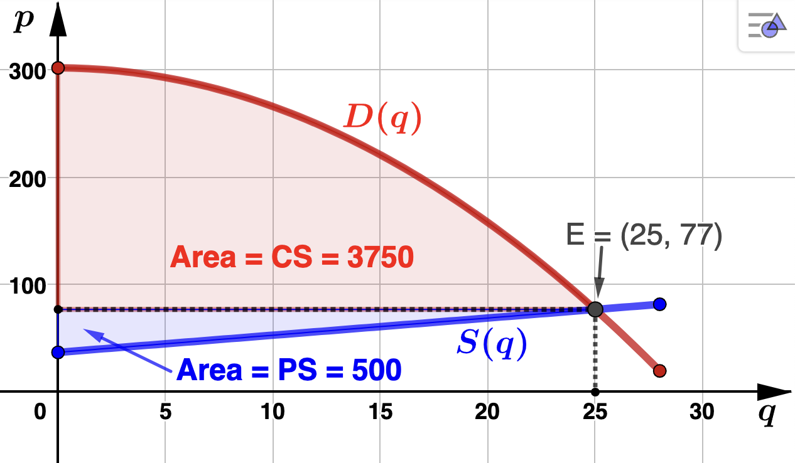

Section 4.4 Applications of the Fundamental Theorem of Calculus
In the problems below, we will be using Theorem 4.3.1 to find the total change in some unknown function \(F(x)\) given its rate of change (or deriviate), \(f(x)\text{.}\)
\begin{equation*}
MP(x) = .4x^3 - 1.2x + 1
\end{equation*}
millions of dollars per hundred thousand hoodies. ADTF Distributors currently manufactures 100,000 hoodies each year. However, due to an increase in the number touring artists, they are considering increasing production to 500,000 hoodies. Determine net change in profit when the production is increased from 100,000 to 500,000 hoodies. Solution.Letting \(P(x)\) represent ADTF Distributors' associated profit function, we are asked to find \(P(5) - P(1)\) (recall that \(x\) is in hundreds of thousands of hoodies). Using Theorem 4.3.1
\begin{align*}
P(5) - P(1) \amp = \int_{x=1}^{5} MP(x) \, dx\\
\\
\amp = \int_{x=1}^{5} (.4x^3 - 1.2x + 1) \, dx \\
\\
\amp = \left( .1x^4 - .6x^2 + x \right)\Biggr|_{x=1}^{5} \\
\\
\amp = 52.
\end{align*}
ADTF Distributors' net change profit when production is increased from 100,000 to 500,000 hoodies is $52,000,000. Below is the graph, which illustrates the value of the definite integral as the area under ADTF Distributors' marginal profit function. It is important to note that $52 million is not ADTF Distributors' profit from producing and selling 500,000 hoodies. We do not have enough information to fully determine \(P(x)\text{:}\) \(P(x) = .1x^4 - .6x^2 + x + c \text{,}\) where \(c\) is an arbritrary constant. As a result, unable to calculate \(P(5)\text{.}\)
Example 4.4.2.
\begin{equation*}
r(w) = 95+.3w^2 -.5w
\end{equation*}
bicylces per week, where \(w\) is in weeks. How many bicylces did UCRF produce from day 8 to day 28? Solution.Let \(R(w)\) be the function that gives the number of bicycles produced by UCRF in \(w\) weeks (that is, \(R'(w)=r(w)\)). Since day 8 starts the second week, and day 28 ends the fourth week, we are asked to find \(R(4) - R(1)\text{.}\) Using Theorem 4.3.1,
\begin{align*}
R(4)-R(1) \amp = \int_{w=1}^{4} r(w) \, dw\\
\\
\amp = \int_{w=1}^{4} (95+.3w^2-.5w) \, dw\\
\\
\amp = \left(95w + .1w^3 - .25w^2\right)\Biggr|_{w=1}^{4} \\
\\
\amp = 287.55
\end{align*}
To answer the question we will round down, since UCRF will not count a fraction of a bike in their total. So, the number of bikes produced by UCRF from day 8 to day 28 was 287 bikes. Below is the graph which illustrates the value of the definite integral as are under \(r(w)\text{.}\)
Example 4.4.3.
\begin{equation*}
m(t) = 3\sqrt{t} + 1.5
\end{equation*}
hundred of dollars per year. Find the accumulated maintenance cost Kramerica can expect from a 4 year lease. Use your answer to determine how much Kramerica should add to the monthly lease agreements to cover their maintenance fees for this lease period. Solution.Let \(M(t)\) be the function that gives Kramerica's maintenance cost in hundreds of dollars for a \(t\) year lease (that is, \(M'(t)=m(t)\)). We are asked to find \(M(4) - M(0)\text{.}\) Using Theorem 4.3.1, the accumulated maintenance cost for a 4 year lease is
\begin{align*}
M(4) - M(0) \amp = \int_{t=0}^{4} m(t) \, dt\\
\\
\amp = \int_{t=0}^{4} (3t^{1/2} + 1.5) \, dw\\
\\
\amp = \left(2\sqrt{t^3} + 1.5t\right)\Biggr|_{t=0}^{4} \\
\\
\amp = 22
\end{align*}
We find that the accumulated maintenance cost Kramerica can expect from a 4 year lease is $2,200. Since there are 48 months in this lease period, rounding up to cover all costs, Kramerica should add about $45.84 a montth to fully cover maintenance fees. Below is the graph which illustrates the value of the definite integral as area under \(m(t)\text{.}\)
Example 4.4.4.
\begin{equation*}
s(n) = -10n-9
\end{equation*}
hundreds of subscribers per month, where \(n\) is the number of months since the fee was increased. - Find the total change in the number of subscribers over the first 7 months after they increased the subscription fee. Solution.Let \(S(n)\) be the function that gives DDX's subscribers (in hundreds) \(n\) months after the fee was increased (that is, \(S'(n)=s(n)\)). We are asked to find \(S(7) - S(0)\text{.}\) Notice that since a loss of subscribers is expected, we should expect \(S(7) - S(0) \leq 0\text{.}\) Using Theorem 4.3.1,\begin{align*} S(7) - S(0) \amp = \int_{n=0}^{7} s(n) \, dn\\ \\ \amp = \int_{n=0}^{7} (-10n-9) \, dn\\ \\ \amp = \left(-5n^2 - 9n\right)\Biggr|_{t=0}^{7} \\ \\ \amp = -308 \end{align*}which is less than 0, indicating a loss of subscribers as expected. As a result of increasing their monthly subscription fee from $3.25 to $6.75, DDX lost 30,800 subscribers in the first 7 months. Below is the graph which relates the value of the definite integral to the area between \(s(n)\) and \([0,7]\text{.}\)
- Suppose DDX had 135,000 subscribers before they increased they their fees. Determine if DDX's strategy succeeded in increasing revenue after these 7 months have passed. Solution.Prior to the increase, DDX's revenue from monthly subscriptions was 135,000(3.25) = $438,750. Seven months afte the increae, DDX's revenue was (135,000 - 30,800)(6.75) = $703,350. So, increasing the monthly subscription fee caused a decrease of 30,800 in subscribers, but generated an additional $264,600 in revenue. So, their stragety was successful.
Area Between Curves
As a natural consequence of the geometric interpretation of the definite integral we have the following:
If \(f\) and \(g\) are integrable over the interval \([a,b]\) and \(f(x) \geq g(x)\) for all \(x\) in \([a,b]\) then the area, \(A\text{,}\) between \(f\) and \(g\) over the interval \([a,b]\) is
\begin{equation*}
A = \int_{x=a}^{b} \left( f(x) - g(x) \right) \: dx
\end{equation*}
Be aware that if the functions intersect at some value \(c\) in the interval \((a,b)\text{,}\) and \(f(x) \geq g(x)\) for \(x\) in \([a,c)\) and \(g(x) \geq f(x)\) for \(x\) in \((c,b]\text{,}\) then two integrals are needed to find the total area, \(A\text{,}\) trapped by \(f\) and \(g\) over the interval \([a,b]\text{.}\) The area would be
\begin{equation*}
A = \int_{x=a}^{c} (f(x) - g(x)) \: dx + \int_{x=c}^{b} (g(x) - f(x)) \: dx
\end{equation*}
This is illustated in the graph below. Notice that \(A\) is the sum of two regions of area, \(A = A_1 + A_2\text{,}\) where
\begin{equation*}
A_1 = \int_{x=a}^{c} (f(x) - g(x)) \: dx
\end{equation*}
and
\begin{equation*}
A_2 = \int_{x=c}^{b} (g(x) - f(x)) \: dx
\end{equation*}
We will see this idea illustrated in the following examples.
Example 4.4.5.
\begin{equation*}
MR(t) = 1.03t^2 - 8.42t +50
\end{equation*}
millions of dollars per year, valid for \(1 \leq t \leq 20\) where \(t=1\) corresponds to the start of the year 1990. The rate at which costs were incurred is given by
\begin{equation*}
MC(t) = .43t^2 + 1.36t + 8
\end{equation*}
millions of dollars per year. Find VL Consultants' total profit from the start of 1994 to the start of 2004. Solution.Let \(P(t)\) represent VL Consultant's total profit function. Then we are asked to find \(P(15) - P(5)\) (note that \(t=5\) corresponds to the start of 1994 and \(t=15\) corresponds to the start of 2004). Since \(MP(t) = MR(t) - MC(t)\text{,}\) by Theorem 4.3.1
\begin{align*}
P(15) - P(5) \amp = \int_{t=5}^{15} MP(t) \, dt \\
\\
\amp = \int_{t=5}^{15} [MR(t) - MC(t)] \, dt \\
\\
\amp = \int_{t=5}^{15}\left[(1.03t^2 - 8.42t +50)-(.43t^2 + 1.36t + 8)\right] \, dt\\
\\
\amp = \int_{t=5}^{15}(.6t^2 - 9.78t + 42) \, dt\\
\\
\amp = \left(.2t^3 - 4.89t^2 + 42t\right)\Biggr|_{t=5}^{15} \\
\\
\amp = 364
\end{align*}
VL Consultants' total profit from the start of 1994 to the start of 2004 was $364,000,000. You should be able to verify algebraically that \(MR(t) > MC(t)\) for all \(t\) in \([5,15]\text{.}\) So, the definite integral above is the area between \(MR(t)\) and \(MC(t)\) from \(t=5\) to \(t=15\text{.}\) Below is the graph illustrating the value of the definite integral as the area between these two models. Example 4.4.6.
\begin{equation*}
S'(x) = 61.6 - .44x^2
\end{equation*}
tens of dollars per year the equipment is used (so, \(x\) is in years). Also throughout the first nine years of use, the equipment has an operating expense with an associated rate of cost given by
\begin{equation*}
C'(x) = .44x^2+2.64x
\end{equation*}
tens of dollars per year the equipment is in use. - Determine how long the the new equipment should be used to maximize savings. Solution.Obsere that initially the rate of savings is greater than the rate of cost. However, the rate of savings declines with time, while the rate of cost increase with time. We need to determine how long it will take the rate of cost to catch up to the rate of savings. To do this we solve\begin{align*} C'(x) \amp = S'(x) \\ .44x^2+2.64x \amp = 61.6 - .44x^2 \\ .88x^2 + 2.64x - 61.6 \amp = 0 \\ x^2 + 3x - 70 \amp = 0 \\ (x+10)(x-7) \amp = 0 \end{align*}Since \(x\) represtents years, the only valid solution is \(x=7\) and we conclude that to maximize savings, Puddy's Auto Shop should use the equiment for 7 years. The graph below shows that \(S'(x)\) and \(C'(x)\) intersect at \(x=7\text{.}\)
- Determine Puddy's net, maximal savings from using the new equipment. Solution.To do this, we subtract the rate of cost of using the new equipment from the rate of savings associated with using the new equipment. This function, \(S'(x) - C'(x)\text{,}\) will give the rate of net savings. Using our answer from the previous part, to determine the net, maximal savings, we integrate from \(x=0\) to \(x=7\) to obtain:\begin{align*} \int_{x=0}^{7} (S'(x) - C'(x)) \, dx \amp = \int_{x=0}^{7} (-.88x^2 - 2.64x + 61.6) \, dx\\ \\ \amp = \left(-\frac{.88}{3}x^3 - 1.32x^2 + 61.6x\right)\Biggr|_{x=0}^{7} \\ \\ \amp = 265.9 \end{align*}where the answer above is rounded to one decimal place. We see that Puddy's net, maximal savings from using the new equipment is $2,659. Geometrically, this is the area between \(S'(x)\) and \(C'(x)\) over \([0,7]\text{,}\) as depicted below.
Consumer and Producer Surplus
Consumer surplus (CS) is a measure of the benefit consumers gain when they are willing to pay more than the market price.
For individual consumers, this is simply a difference in dollar amounts. With respect to the market, it's found by calculating the area under the demand curve and above the market price.
Producer surplus (PS) is a measure of the benefit producers gain when they are willing to supply an item for less than the market price.
With respect to the market, this is found by calculating the area under the market price and above the supply curve.
Both consumer surplus (CS) and producer surplus (PS) at equlibrium are represented as area in the graph below. The demand model is the function \(p=D(q)\) while supply is represented by \(p=S(q)\text{.}\) Observe \(E = (q_0,p_0)\) is the equilibrium point so that \(q_0\) is the equilibrium quantity and \(p_0 = S(q_0) = D(q_0)\) gives the market equilbrium price.
We compute consumer and producer surplus using definite integrals as follows:
- Consumer Surplus = CS = \(\displaystyle \int_{q = 0}^{q_0}(D(q) - p_0) \: dq \)
- Producer Surplus = PS = \(\displaystyle \int_{q = 0}^{q_0}(p_0 - S(q)) \: dq \)
Equivalently,
- Consumer Surplus = CS = \(\displaystyle \int_{q = 0}^{q_0} D(q) \: dq - p_0 q_0 \)
- Producer Surplus = PS = \(p_0 q_0 - \displaystyle \int_{q = 0}^{q_0} S(q) \: dq \)
where \(p_0 q_0\) is the revenue at equilibrium and \(\displaystyle \int_{q = 0}^{q_0} D(q) \: dq\) and \(\displaystyle \int_{q = 0}^{q_0} S(q) \: dq\) are referred to as the definite integral portions of consumer and producer surplus respectively. Note also that \((p,Q)\) is often used to represent the market equilibrium point instead of \((p_0,q_0)\text{.}\)
Example 4.4.7.
\begin{equation*}
p = D(q) = 302 -.36q^2
\end{equation*}
dollars, where \(q\) is the number of snow blowers. Similarly, the supply function is
\begin{equation*}
p = S(q) = 1.6q+37
\end{equation*}
dollars, where \(q\) is the number of snow blowers. - Find the eqilibrium point, \(E\text{,}\) for this market and use it to calculate ADTF Distributors' revenue at equilibrium. Solution.Since \(E\) will be the point where supply and demand intersect, we solve\begin{align*} S(q) \amp = D(q) \\ 1.6q+37 \amp = 302 -.36q^2 \\ .36q^2 + 1.6q - 265 \amp = 0 \end{align*}Using the quadratic formula we find one valid solution: \(q = 25\text{.}\) Since \(D(25) = S(25) = 77\text{,}\) the equilibrium point is \(E = (25,77)\text{.}\) Thus, this market is in equlibrium (supply equals demand) when 25 snow blowers are supplied at a price $77. Hence, the ADTF Distributors' reveune at equilibrium is \((p_0)(q_0) = \)(77)(25) = $1,925.
- Compute the consumer surplus at equilibrium for these snow blowers. Solution.Since \(q_0 = 25\) is the equilibrium quantity, and \(p_0 = 77\) gives the equilibrium price, the consumer surplus is\begin{equation*} \textrm{CS} = \int_{q=0}^{25} (D(q) - 77) \: dq = \int_{q=0}^{25} ((302 -.36q^2) - 77) \: dq \end{equation*}which we can simplify and evaluate. However, let's find the consumer surplus by first evaluating the integral portion, \(\int_{q=0}^{25} D(q) \: dq\) and then use our answer from the previous part. Now,\begin{align*} \int_{q=0}^{25} D(q) \: dq \amp = \int_{q=0}^{25} (302-.36q^2) \: dq \\ \\ \amp = \left(302q-.12q^3 \right)\Biggr|_{q=0}^{25}\\ \\ \amp = 5,675. \end{align*}Since\begin{equation*} \textrm{CS} = \int_{q = 0}^{q_0} D(q) \: dq - p_0 q_0, \end{equation*}we find that the consumer surplus in this market is 5,675-1,925 = 3,750. So, when supply and demand are at equilibrium, the consumer surplus for the sale of the new snow blowers will be $3,750.
- Compute the producer surplus at equilibrium for these snow blowers. Solution.Since \(q_0 = 25\) is the equilibrium quantity, and \(p_0 = 77\) gives the equilibrium price, the consumer surplus is\begin{equation*} \textrm{PS} = \int_{q=0}^{25} (77 - S(q)) \: dq = \int_{q=0}^{25} (77 - (1.6q + 37)) \: dq \end{equation*}which we can simplify and evaluate. However, let's find the producer surplus by first evaluating the integral portion, \(\int_{q=0}^{25} S(q) \: dq\) and then use our answer from the previous part. Now,\begin{align*} \int_{q=0}^{25} S(q) \: dq \amp = \int_{q=0}^{25} (1.6q + 37) \: dq \\ \\ \amp = \left(.8q^2 + 37q \right)\Biggr|_{q=0}^{25}\\ \\ \amp = 1,425. \end{align*}Since\begin{equation*} \textrm{PS} = p_0 q_0 - \int_{q = 0}^{q_0} S(q) \: dq, \end{equation*}we find that the producer surplus in this market is 1,925-1,425 = 500. So, when supply and demand are at equilibrium, ADTF Distributors will have a producer surplus of $500.
- Graph \(D(q)\) and \(S(q)\text{.}\) Label the equlibrium point \(E\) and shade in the regions of area that give the conumer and producer surplus. Solution.